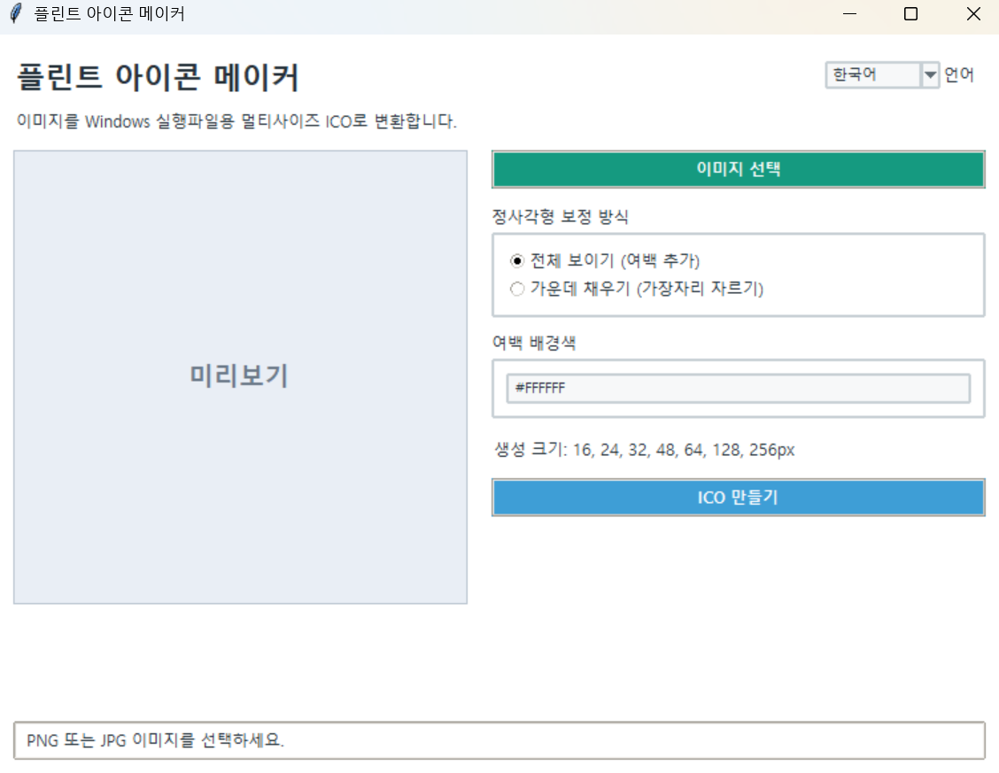

플린트 아이콘 메이커
버전: 1.1.0
한국어와 영어 화면을 지원하며, 오른쪽 위 언어 전환 버튼으로 실행 중에도 표시 언어를 바꿀 수 있습니다.
사용 방법
이미지 선택을 눌러 아이콘으로 만들 이미지를 선택합니다.-
정사각형 보정 방식을 선택합니다.
-
전체 보이기: 원본 전체를 유지하고 남는 공간에 여백을 추가합니다. 가운데 채우기: 정사각형을 가득 채우고 가장자리를 일부 잘라냅니다.- 전체 보이기를 사용할 경우 여백 배경색을
#RRGGBB형식으로 입력합니다. - 미리보기를 확인합니다.
ICO 만들기를 눌러 저장 위치와 파일명을 지정합니다.
주요 기능
- PNG, JPG, JPEG, WEBP, BMP 이미지 지원
- 정사각형 자동 보정
- 전체 이미지 유지 또는 가운데 크롭 선택
- 여백 배경색 지정
- 16, 24, 32, 48, 64, 128, 256px 멀티사이즈 ICO 생성
- 한국어·영어 화면 전환
- 이미지 선택창, 저장창, 오류창, 완료 안내까지 이중 언어 지원
소스 코드 실행
필수 패키지 설치:
pip install pillow
실행:
python iconmaker.py
참고:실행 파일(EXE) 버전을 사용하는 경우에는 필수 패키지 설치나 python 명령을 실행할 필요가 없습니다.